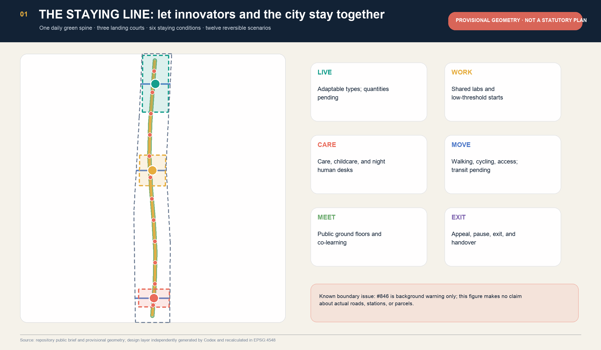
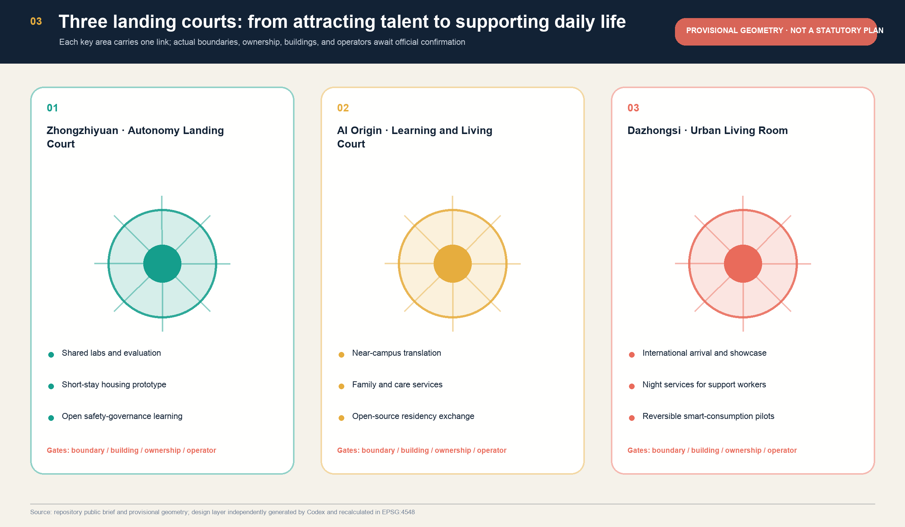
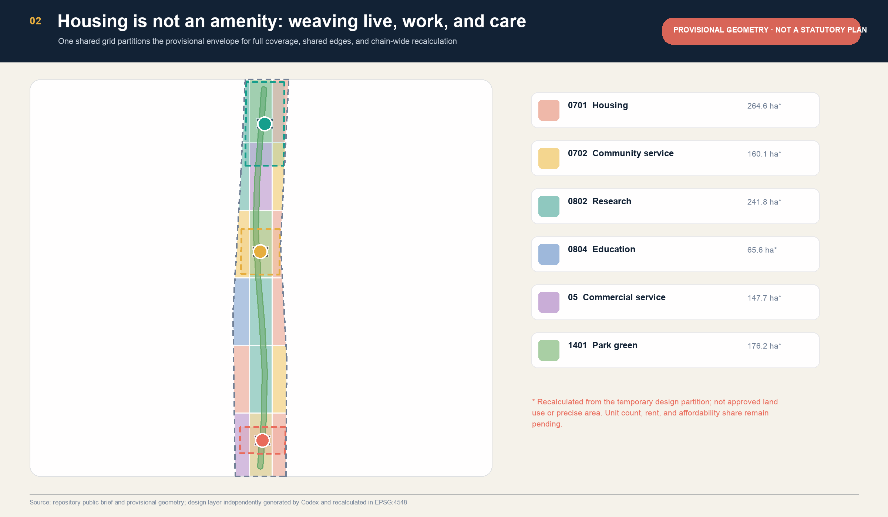
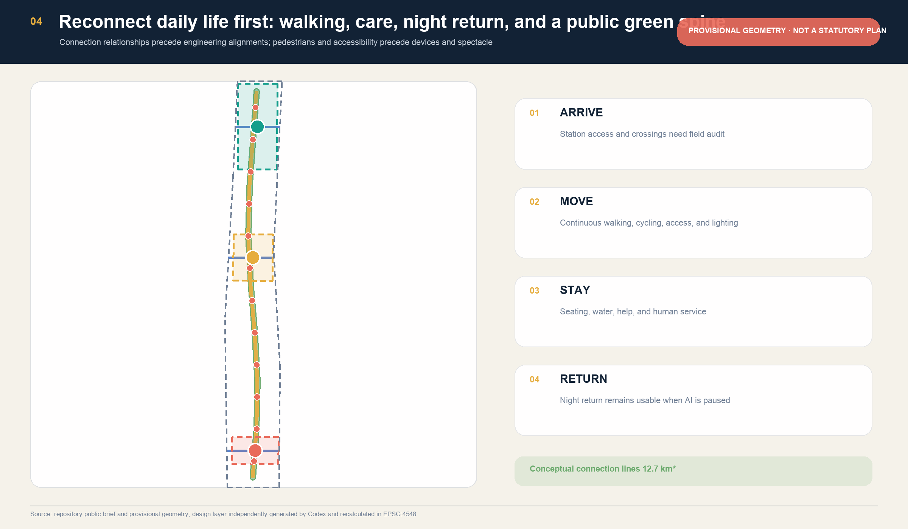
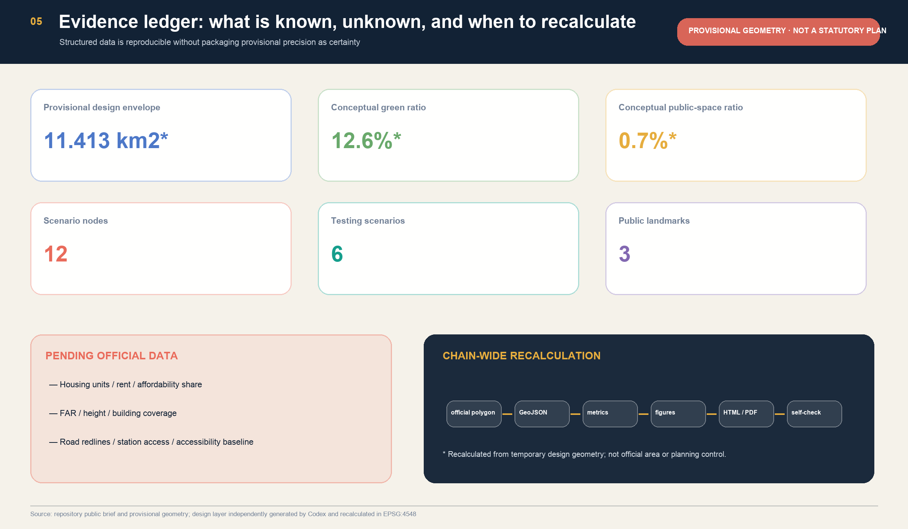

Coordinated Research Area
Study coordination among talent, innovation, service, and housing-support chains; the announced 43.6 km² is not converted into a precise claim from the temporary polygon.
Turn talent attraction from a one-off campaign into six everyday spatial conditions: live, work, care, move, meet, and exit.
This page is a conceptual recommendation, not an official plan, approval, or implementation commitment.

Study coordination among talent, innovation, service, and housing-support chains; the announced 43.6 km² is not converted into a precise claim from the temporary polygon.
Use a complete land-use partition, daily green spine, three arrival links, and shared ground floors to express design relationships; geometry is intake-only.
Zhongzhiyuan, AI Origin, and Dazhongsi carry launch, learning-and-living, and urban exchange roles; boundaries, ownership, and buildings await official data.



Prioritise walking, cycling, rest, water, help, and low-impact exchange; water, green-line, trees, and heritage controls remain pending.
Place labs, housing support, care, learning, and civic deliberation on accessible ground floors rather than behind campus gates.
Basic movement, human service, and help must remain available when smart services stop.
Twelve small envelopes test adjacency among housing, labs, care, and public living rooms. Without existing-building, ownership, structural, or heritage data, no retain-renovate-demolish, height, or floor-area conclusion is made.
Measure before target-setting; publish definitions, gaps, and appeals.
Small-scale, accountable, and stoppable; pilots do not replace approvals.
Review equity, use, maintenance, and side effects before any expansion.

Twenty-three announcement and agent requirements are mapped in compliance_matrix.json; six professional standards in standard_matrix.json; and fifteen design-depth items in design_depth_matrix.json. Prose keeps claim-adjacent evidence instead of ID dumps.
| Gate | Current local state | Boundary |
|---|---|---|
| Geometry / topology | PASS | Provisional, not official |
| Scenarios / governance | PASS | Human review and exit required |
| Bilingual display | PASS | Rerun the validator after every revision |
Formal basis: the official announcement, cleared agent taskbook, MOHURD urban-design and control-plan rules, and MNR land-use classification. Mechanism cases support comparison only, not statutory controls or existing-condition claims for Jing-Zhang.
Issue #846：Community review reports a material mismatch between the repository provisional boundary and independent observations. This proposal neither auto-adopts an OSM-derived replacement nor claims real-site placement; the whole chain must be recalculated after official polygons arrive.